Backward-selected mixed-effects models for log he/she odds. Positive estimates shift predictions toward "he"; negative estimates shift them toward "she". Generated on 2026-07-22.
Best expanded random-slope model per target model.
| Model | Selected model | Converged | Optimizer | N | AIC | BIC | Log likelihood | Marginal R2 | Conditional R2 | Residual variance |
|---|---|---|---|---|---|---|---|---|---|---|
| Qwen_Qwen3-4B-Base | selected mixed random slopes candidate 4 C semantic role C valence | True | lbfgs | 15360 | 17084.614 | 17604.102 | -8474.307 | 0.055 | 0.924 | 0.171 |
| Qwen_Qwen3-8B-Base | selected mixed random slopes candidate 0 C valence lex emb norm | True | lbfgs | 15360 | 21227.325 | 21777.370 | -10541.662 | 0.048 | 0.901 | 0.224 |
| gpt2 | selected mixed random slopes candidate 2 C tense log frequency | True | lbfgs | 15360 | 5639.518 | 6143.726 | -2753.759 | 0.142 | 0.948 | 0.081 |
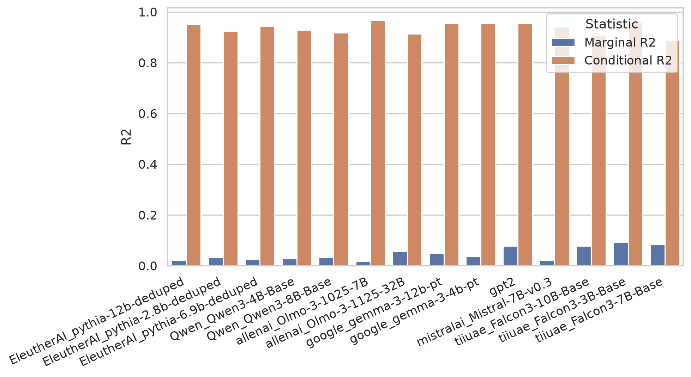
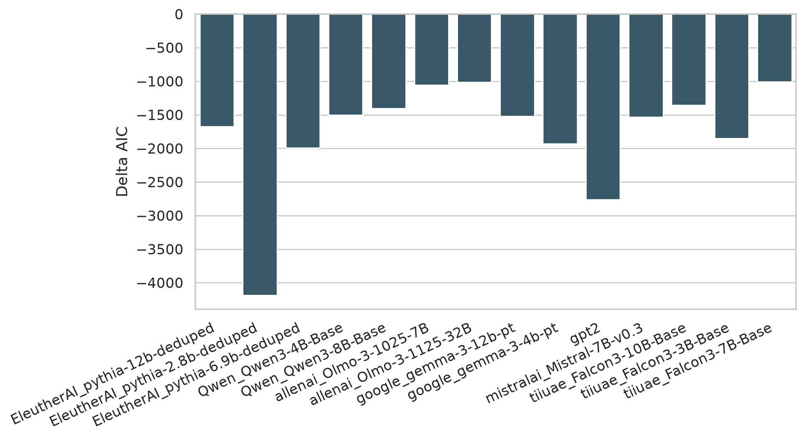
The five strongest fitted candidate models retained for each input file, ranked by AIC.
| Model | Candidate | Candidate detail | Converged | AIC | Delta AIC | BIC | Marginal R2 | Conditional R2 | Formula | Random formula |
|---|---|---|---|---|---|---|---|---|---|---|
| Qwen_Qwen3-4B-Base | selected_mixed_random_slopes__candidate__1__lex_emb_norm | lex_emb_norm | True | 17662.938 | 0.000 | 17861.566 | 0.030 | 0.920 | log_he_she_odds ~ C(tense) + C(semantic_role) + C(syntactic_role) + C(valence) + C(dominance) | 1 + C(semantic_role) + C(syntactic_role) + C(valence) + C(dominance) |
| Qwen_Qwen3-4B-Base | selected_mixed_random_slopes__candidate__2__C_dominance | C(dominance) | True | 17663.772 | 0.834 | 17854.760 | 0.030 | 0.921 | log_he_she_odds ~ C(tense) + C(semantic_role) + C(syntactic_role) + C(valence) | 1 + C(semantic_role) + C(syntactic_role) + C(valence) + C(dominance) |
| Qwen_Qwen3-4B-Base | selected_mixed_random_slopes__candidate__0__log_frequency | log_frequency | True | 17663.919 | 0.981 | 17870.186 | 0.037 | 0.921 | log_he_she_odds ~ C(tense) + C(semantic_role) + C(syntactic_role) + C(valence) + C(dominance) + lex_emb_norm | 1 + C(semantic_role) + C(syntactic_role) + C(valence) + C(dominance) |
| Qwen_Qwen3-4B-Base | selected_mixed_random_slopes__candidate__0__lex_emb_norm | lex_emb_norm | True | 17664.687 | 1.749 | 17870.954 | 0.032 | 0.921 | log_he_she_odds ~ C(tense) + C(semantic_role) + C(syntactic_role) + C(valence) + C(dominance) + log_frequency | 1 + C(semantic_role) + C(syntactic_role) + C(valence) + C(dominance) |
| Qwen_Qwen3-4B-Base | selected_mixed_random_slopes__candidate__1__C_dominance | C(dominance) | True | 17664.753 | 1.814 | 17863.380 | 0.037 | 0.922 | log_he_she_odds ~ C(tense) + C(semantic_role) + C(syntactic_role) + C(valence) + lex_emb_norm | 1 + C(semantic_role) + C(syntactic_role) + C(valence) + C(dominance) |
| Qwen_Qwen3-8B-Base | selected_mixed_random_slopes__candidate__0__lex_emb_norm | lex_emb_norm | True | 21652.993 | 0.000 | 21859.260 | 0.055 | 0.904 | log_he_she_odds ~ C(tense) + C(semantic_role) + C(syntactic_role) + C(valence) + C(dominance) + log_frequency | 1 + C(semantic_role) + C(syntactic_role) + C(valence) + C(dominance) |
| Qwen_Qwen3-8B-Base | selected_mixed_random_slopes__candidate__0__log_frequency | log_frequency | True | 21655.096 | 2.103 | 21861.363 | 0.041 | 0.900 | log_he_she_odds ~ C(tense) + C(semantic_role) + C(syntactic_role) + C(valence) + C(dominance) + lex_emb_norm | 1 + C(semantic_role) + C(syntactic_role) + C(valence) + C(dominance) |
| Qwen_Qwen3-8B-Base | selected_mixed_random_slopes__candidate__1__log_frequency | log_frequency | True | 21655.129 | 2.136 | 21853.757 | 0.030 | 0.898 | log_he_she_odds ~ C(tense) + C(semantic_role) + C(syntactic_role) + C(valence) + C(dominance) | 1 + C(semantic_role) + C(syntactic_role) + C(valence) + C(dominance) |
| Qwen_Qwen3-8B-Base | selected_mixed_random_slopes__candidate__1__C_dominance | C(dominance) | True | 21663.554 | 10.561 | 21862.182 | 0.050 | 0.904 | log_he_she_odds ~ C(tense) + C(semantic_role) + C(syntactic_role) + C(valence) + log_frequency | 1 + C(semantic_role) + C(syntactic_role) + C(valence) + C(dominance) |
| Qwen_Qwen3-8B-Base | selected_mixed_random_slopes__candidate__0__C_dominance | C(dominance) | True | 21665.542 | 12.549 | 21871.810 | 0.050 | 0.905 | log_he_she_odds ~ C(tense) + C(semantic_role) + C(syntactic_role) + C(valence) + log_frequency + lex_emb_norm | 1 + C(semantic_role) + C(syntactic_role) + C(valence) + C(dominance) |
| gpt2 | selected_mixed_random_slopes__candidate__0__C_dominance | C(dominance) | True | 7038.162 | 0.000 | 7244.429 | 0.165 | 0.948 | log_he_she_odds ~ C(tense) + C(semantic_role) + C(syntactic_role) + C(valence) + log_frequency + lex_emb_norm | 1 + C(semantic_role) + C(syntactic_role) + C(valence) + C(dominance) |
| gpt2 | selected_mixed_random_slopes__candidate__0__lex_emb_norm | lex_emb_norm | True | 7044.709 | 6.547 | 7250.976 | 0.026 | 0.943 | log_he_she_odds ~ C(tense) + C(semantic_role) + C(syntactic_role) + C(valence) + C(dominance) + log_frequency | 1 + C(semantic_role) + C(syntactic_role) + C(valence) + C(dominance) |
| gpt2 | selected_mixed_random_slopes__candidate__0__C_valence | C(valence) | True | 7045.468 | 7.306 | 7251.736 | 0.173 | 0.945 | log_he_she_odds ~ C(tense) + C(semantic_role) + C(syntactic_role) + C(dominance) + log_frequency + lex_emb_norm | 1 + C(semantic_role) + C(syntactic_role) + C(valence) + C(dominance) |
| gpt2 | selected_mixed_random_slopes__candidate__0__C_syntactic_role | C(syntactic_role) | True | 7055.549 | 17.387 | 7261.817 | 0.207 | 0.936 | log_he_she_odds ~ C(tense) + C(semantic_role) + C(valence) + C(dominance) + log_frequency + lex_emb_norm | 1 + C(semantic_role) + C(syntactic_role) + C(valence) + C(dominance) |
| gpt2 | selected_mixed_random_slopes__candidate__0__C_semantic_role | C(semantic_role) | True | 7084.183 | 46.021 | 7290.450 | 0.155 | 0.951 | log_he_she_odds ~ C(tense) + C(syntactic_role) + C(valence) + C(dominance) + log_frequency + lex_emb_norm | 1 + C(semantic_role) + C(syntactic_role) + C(valence) + C(dominance) |
The baseline fit uses the selected fixed effects with a random intercept only. The expanded fit adds the selected random-slope structure on top of that same baseline.
| Model | Baseline conditional R2 | Expanded conditional R2 | Delta conditional R2 | Baseline AIC | Expanded AIC | Delta AIC | Baseline random effects | Expanded random effects |
|---|---|---|---|---|---|---|---|---|
| Qwen_Qwen3-4B-Base | 0.915 | 0.924 | 0.008 | 18296.800 | 17084.614 | -1212.186 | 1 | 1 + C(semantic_role) + C(syntactic_role) + C(valence) + C(dominance) |
| Qwen_Qwen3-8B-Base | 0.891 | 0.901 | 0.011 | 22496.587 | 21227.325 | -1269.262 | 1 | 1 + C(semantic_role) + C(syntactic_role) + C(valence) + C(dominance) |
| gpt2 | 0.936 | 0.948 | 0.012 | 7975.159 | 5639.518 | -2335.641 | 1 | 1 + C(semantic_role) + C(syntactic_role) + C(valence) + C(dominance) |
The plot shows absolute explained variance (`R2`) split into three stacked components: the random intercept alone, fixed effects, and the additional contribution from random slopes.
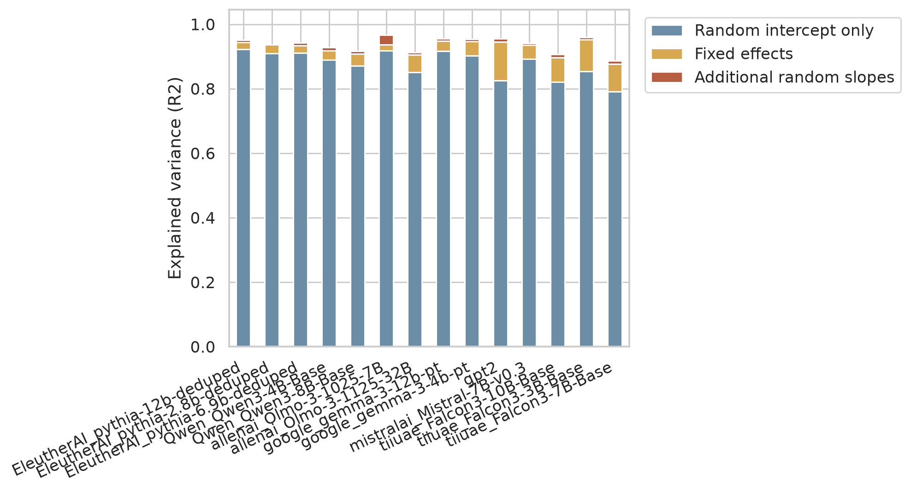
| Model | Fixed effects R2 | Random intercept only R2 | Random intercept + fixed effects R2 | Fixed-effects share within baseline explained variance | Random-intercept-only share within baseline explained variance |
|---|---|---|---|---|---|
| Qwen_Qwen3-4B-Base | 0.067 | 0.849 | 0.915 | 0.073 | 0.927 |
| Qwen_Qwen3-8B-Base | 0.050 | 0.841 | 0.891 | 0.056 | 0.944 |
| gpt2 | 0.132 | 0.804 | 0.936 | 0.141 | 0.859 |
| Model | Random intercept + fixed effects R2 | Additional random-slope R2 | Full model with random slopes R2 | Baseline share within full explained variance | Random-slope share within full explained variance |
|---|---|---|---|---|---|
| Qwen_Qwen3-4B-Base | 0.915 | 0.008 | 0.924 | 0.991 | 0.009 |
| Qwen_Qwen3-8B-Base | 0.891 | 0.011 | 0.901 | 0.988 | 0.012 |
| gpt2 | 0.936 | 0.012 | 0.948 | 0.988 | 0.012 |
Baseline rows are the random-intercept models generated in the same run with the selected fixed terms.
| Model | Semantic role | Syntactic role | Valence | Dominance | Total random-slope variance |
|---|---|---|---|---|---|
| Qwen_Qwen3-4B-Base | 0.011 | 0.049 | 0.005 | 0.003 | 0.068 |
| Qwen_Qwen3-8B-Base | 0.018 | 0.049 | 0.019 | 0.006 | 0.092 |
| gpt2 | 0.002 | 0.053 | 0.001 | 0.003 | 0.060 |
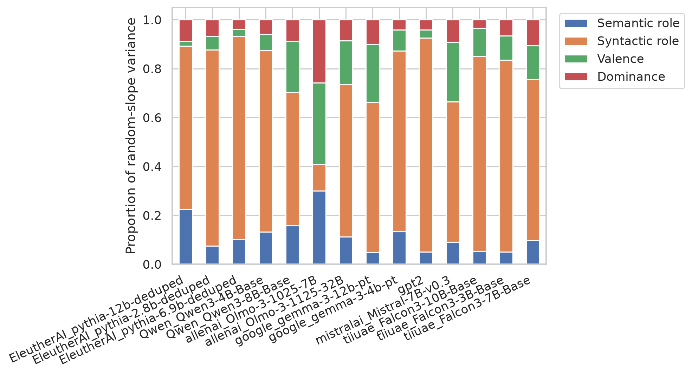
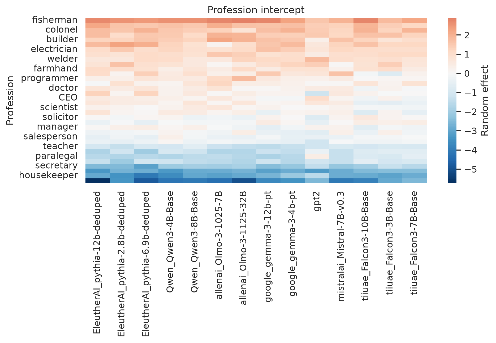
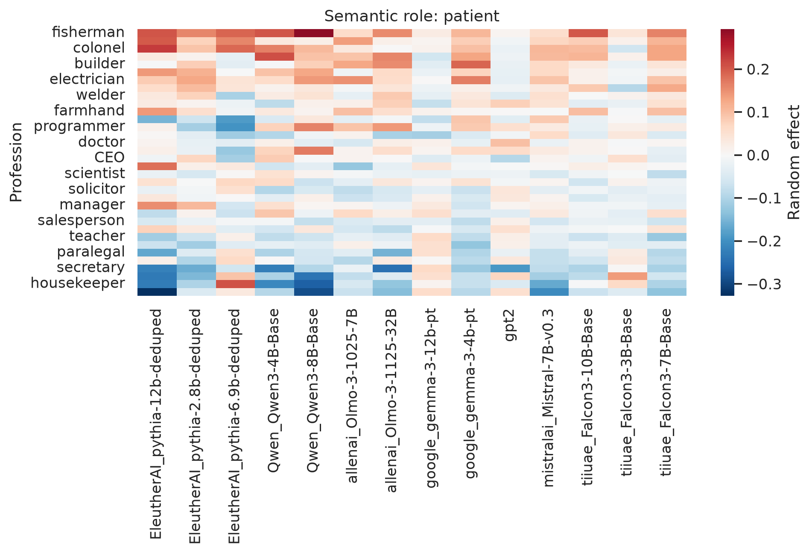
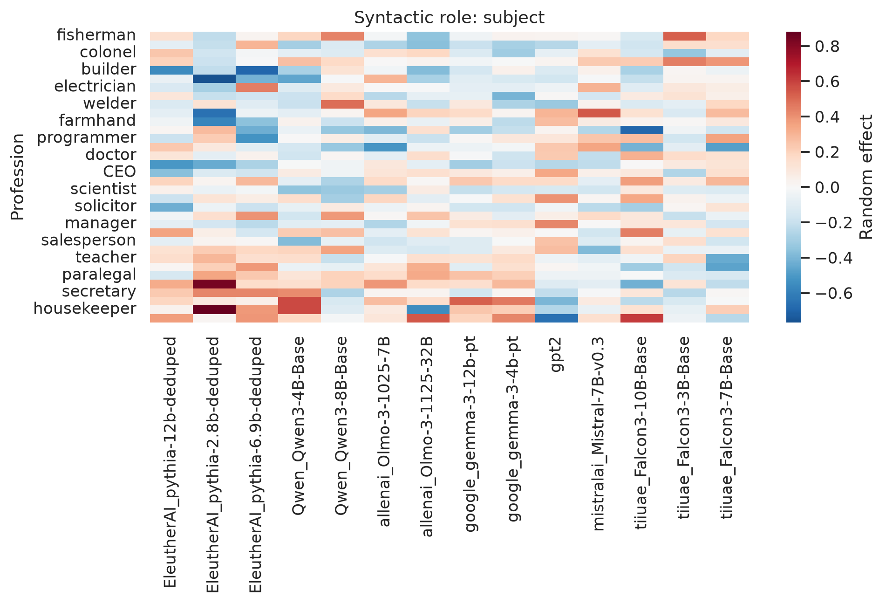
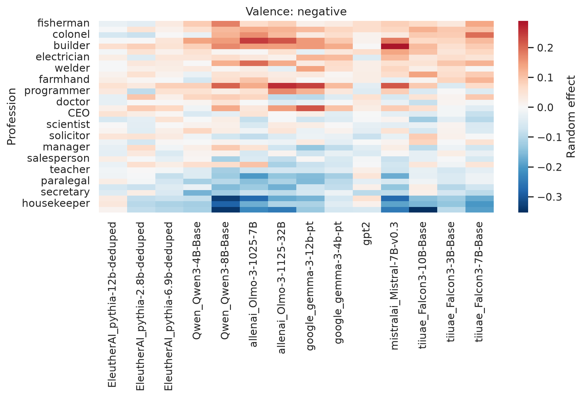
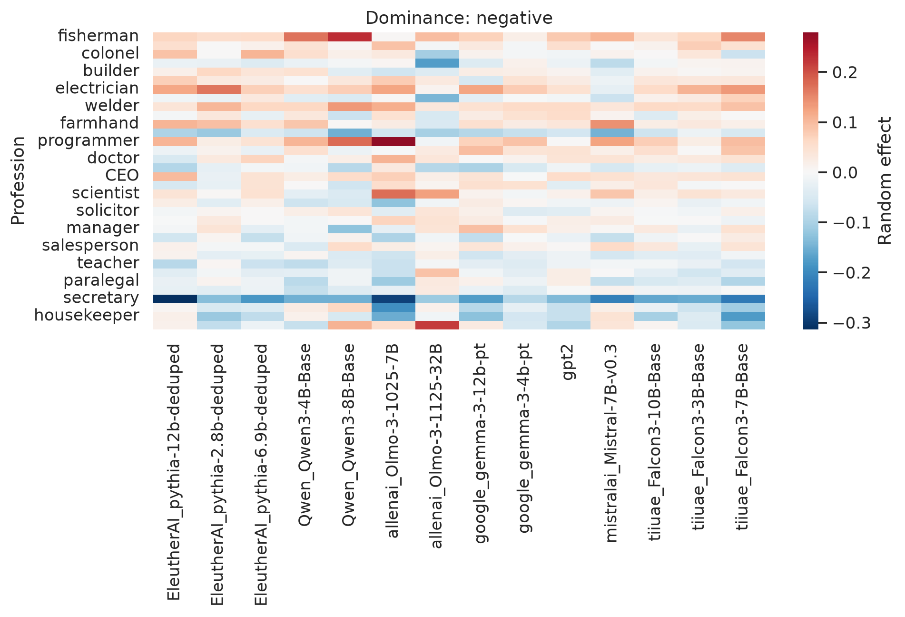
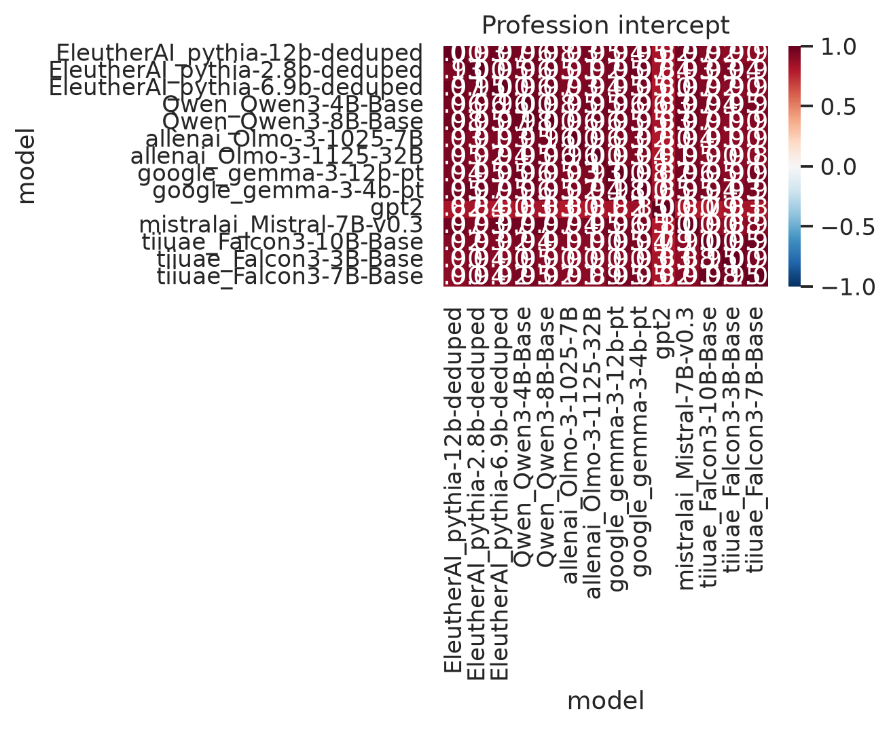
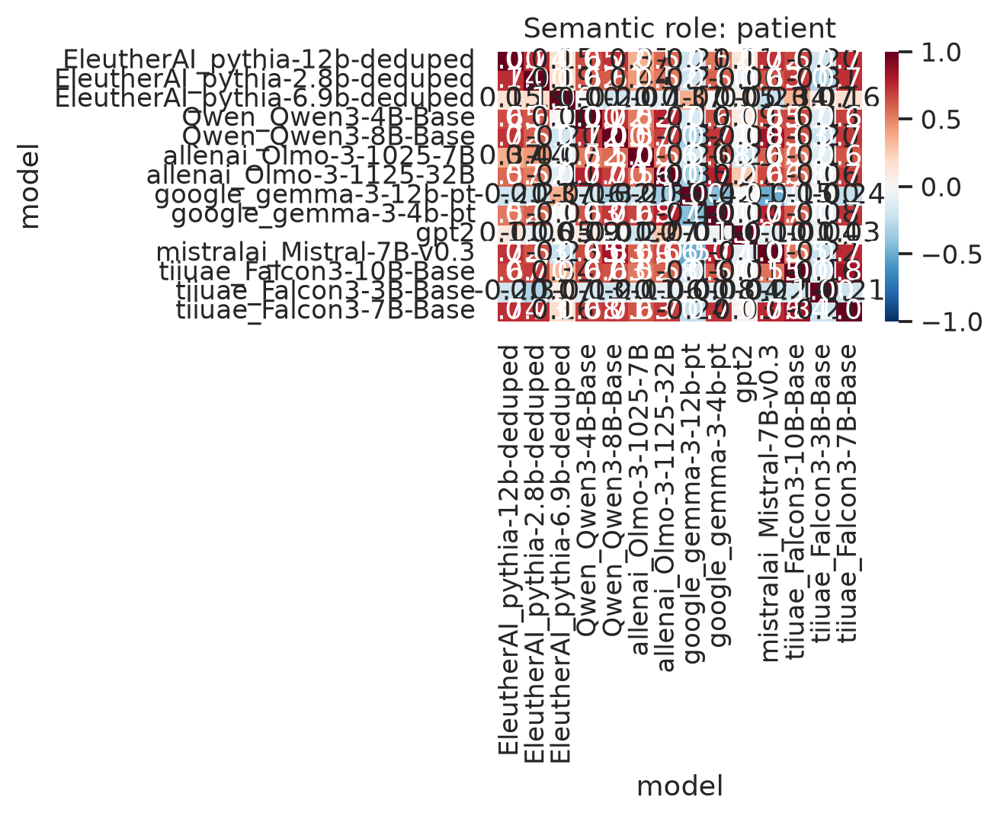
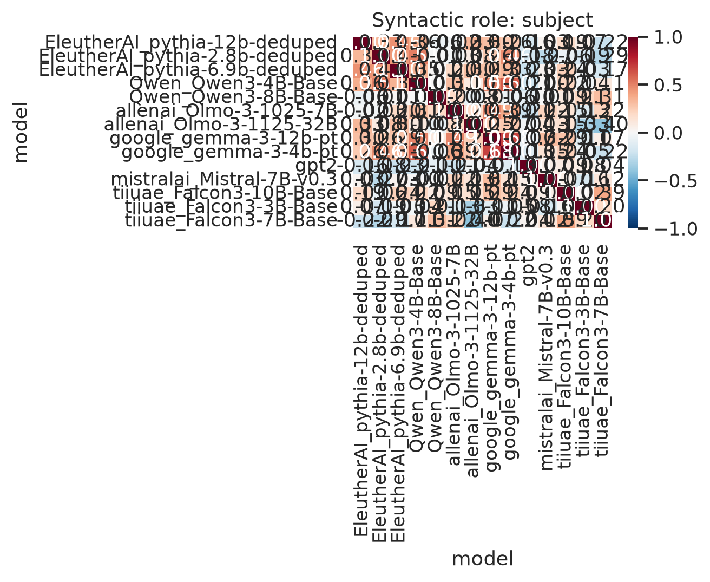
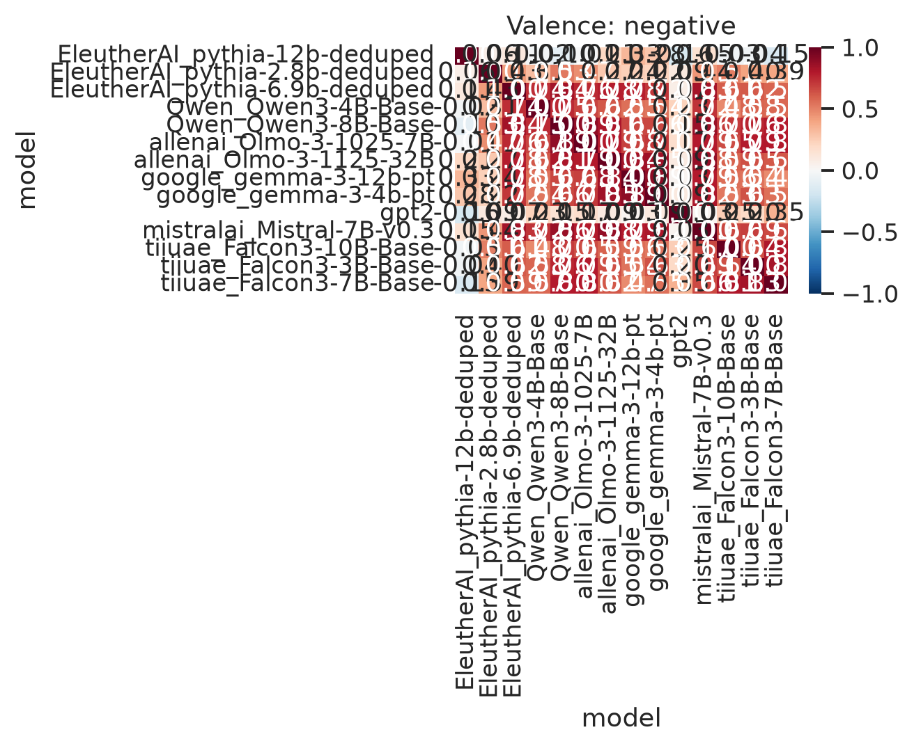
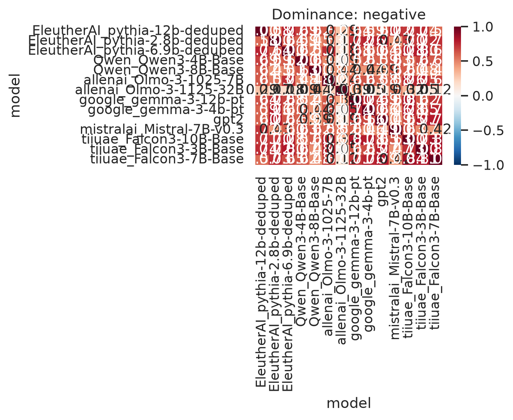
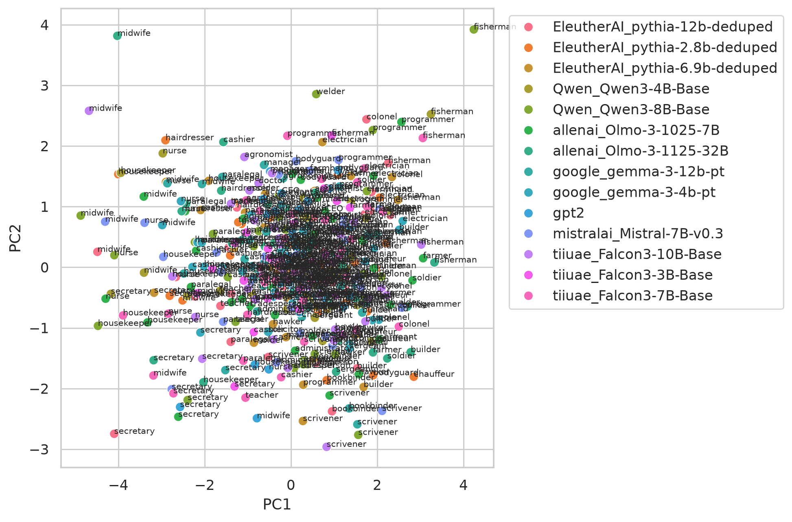
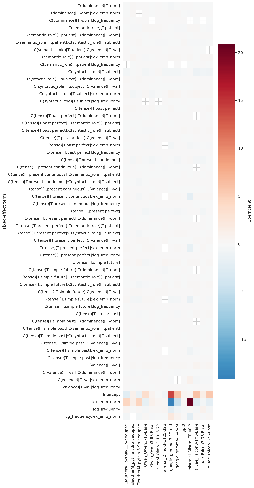
| Model | Term | Estimate | Std. error | p value | CI low | CI high |
|---|---|---|---|---|---|---|
| Qwen_Qwen3-4B-Base | C(dominance)[T.-dom] | 0.054 | 0.077 | 0.482 | -0.096 | 0.204 |
| Qwen_Qwen3-4B-Base | C(dominance)[T.-dom]:lex_emb_norm | 0.192 | 0.107 | 0.072 | -0.017 | 0.401 |
| Qwen_Qwen3-4B-Base | C(dominance)[T.-dom]:log_frequency | -0.015 | 0.007 | 0.049 | -0.029 | -0.000 |
| Qwen_Qwen3-4B-Base | C(semantic_role)[T.patient] | 0.166 | 0.067 | 0.014 | 0.034 | 0.298 |
| Qwen_Qwen3-4B-Base | C(semantic_role)[T.patient]:C(dominance)[T.-dom] | -0.102 | 0.013 | 0.000 | -0.128 | -0.076 |
| Qwen_Qwen3-4B-Base | C(semantic_role)[T.patient]:C(syntactic_role)[T.subject] | -0.042 | 0.013 | 0.002 | -0.068 | -0.015 |
| Qwen_Qwen3-4B-Base | C(semantic_role)[T.patient]:log_frequency | 0.009 | 0.009 | 0.299 | -0.008 | 0.026 |
| Qwen_Qwen3-4B-Base | C(syntactic_role)[T.subject] | -0.484 | 0.240 | 0.043 | -0.954 | -0.014 |
| Qwen_Qwen3-4B-Base | C(syntactic_role)[T.subject]:C(dominance)[T.-dom] | 0.037 | 0.013 | 0.006 | 0.011 | 0.063 |
| Qwen_Qwen3-4B-Base | C(syntactic_role)[T.subject]:C(valence)[T.-val] | 0.019 | 0.013 | 0.163 | -0.008 | 0.045 |
| Qwen_Qwen3-4B-Base | C(syntactic_role)[T.subject]:lex_emb_norm | 0.162 | 0.251 | 0.520 | -0.331 | 0.654 |
| Qwen_Qwen3-4B-Base | C(tense)[T.past perfect] | 0.013 | 0.076 | 0.863 | -0.136 | 0.163 |
| Qwen_Qwen3-4B-Base | C(tense)[T.past perfect]:C(dominance)[T.-dom] | -0.036 | 0.023 | 0.115 | -0.082 | 0.009 |
| Qwen_Qwen3-4B-Base | C(tense)[T.past perfect]:C(semantic_role)[T.patient] | -0.019 | 0.023 | 0.408 | -0.064 | 0.026 |
| Qwen_Qwen3-4B-Base | C(tense)[T.past perfect]:C(syntactic_role)[T.subject] | -0.223 | 0.023 | 0.000 | -0.268 | -0.177 |
| Qwen_Qwen3-4B-Base | C(tense)[T.past perfect]:C(valence)[T.-val] | 0.126 | 0.023 | 0.000 | 0.081 | 0.172 |
| Qwen_Qwen3-4B-Base | C(tense)[T.past perfect]:lex_emb_norm | -0.320 | 0.105 | 0.002 | -0.526 | -0.114 |
| Qwen_Qwen3-4B-Base | C(tense)[T.past perfect]:log_frequency | 0.026 | 0.007 | 0.000 | 0.012 | 0.040 |
| Qwen_Qwen3-4B-Base | C(tense)[T.present continuous] | -0.153 | 0.076 | 0.045 | -0.302 | -0.003 |
| Qwen_Qwen3-4B-Base | C(tense)[T.present continuous]:C(dominance)[T.-dom] | -0.008 | 0.023 | 0.732 | -0.053 | 0.037 |
| Qwen_Qwen3-4B-Base | C(tense)[T.present continuous]:C(semantic_role)[T.patient] | -0.007 | 0.023 | 0.777 | -0.052 | 0.039 |
| Qwen_Qwen3-4B-Base | C(tense)[T.present continuous]:C(syntactic_role)[T.subject] | -0.062 | 0.023 | 0.007 | -0.107 | -0.017 |
| Qwen_Qwen3-4B-Base | C(tense)[T.present continuous]:C(valence)[T.-val] | -0.008 | 0.023 | 0.740 | -0.053 | 0.038 |
| Qwen_Qwen3-4B-Base | C(tense)[T.present continuous]:lex_emb_norm | -0.167 | 0.105 | 0.112 | -0.373 | 0.039 |
| Qwen_Qwen3-4B-Base | C(tense)[T.present continuous]:log_frequency | 0.021 | 0.007 | 0.004 | 0.007 | 0.035 |
| Qwen_Qwen3-4B-Base | C(tense)[T.present perfect] | -0.323 | 0.076 | 0.000 | -0.472 | -0.174 |
| Qwen_Qwen3-4B-Base | C(tense)[T.present perfect]:C(dominance)[T.-dom] | -0.052 | 0.023 | 0.024 | -0.097 | -0.007 |
| Qwen_Qwen3-4B-Base | C(tense)[T.present perfect]:C(semantic_role)[T.patient] | -0.017 | 0.023 | 0.466 | -0.062 | 0.028 |
| Qwen_Qwen3-4B-Base | C(tense)[T.present perfect]:C(syntactic_role)[T.subject] | -0.045 | 0.023 | 0.053 | -0.090 | 0.001 |
| Qwen_Qwen3-4B-Base | C(tense)[T.present perfect]:C(valence)[T.-val] | 0.127 | 0.023 | 0.000 | 0.081 | 0.172 |
| Qwen_Qwen3-4B-Base | C(tense)[T.present perfect]:lex_emb_norm | -0.144 | 0.105 | 0.169 | -0.350 | 0.061 |
| Qwen_Qwen3-4B-Base | C(tense)[T.present perfect]:log_frequency | 0.026 | 0.007 | 0.000 | 0.012 | 0.040 |
| Qwen_Qwen3-4B-Base | C(tense)[T.simple future] | -0.314 | 0.076 | 0.000 | -0.464 | -0.165 |
| Qwen_Qwen3-4B-Base | C(tense)[T.simple future]:C(dominance)[T.-dom] | -0.050 | 0.023 | 0.031 | -0.095 | -0.004 |
| Qwen_Qwen3-4B-Base | C(tense)[T.simple future]:C(semantic_role)[T.patient] | 0.022 | 0.023 | 0.350 | -0.024 | 0.067 |
| Qwen_Qwen3-4B-Base | C(tense)[T.simple future]:C(syntactic_role)[T.subject] | -0.191 | 0.023 | 0.000 | -0.236 | -0.145 |
| Qwen_Qwen3-4B-Base | C(tense)[T.simple future]:C(valence)[T.-val] | 0.017 | 0.023 | 0.461 | -0.028 | 0.062 |
| Qwen_Qwen3-4B-Base | C(tense)[T.simple future]:lex_emb_norm | 0.137 | 0.105 | 0.191 | -0.068 | 0.343 |
| Qwen_Qwen3-4B-Base | C(tense)[T.simple future]:log_frequency | 0.038 | 0.007 | 0.000 | 0.024 | 0.052 |
| Qwen_Qwen3-4B-Base | C(tense)[T.simple past] | -0.106 | 0.076 | 0.163 | -0.256 | 0.043 |
| Qwen_Qwen3-4B-Base | C(tense)[T.simple past]:C(dominance)[T.-dom] | -0.046 | 0.023 | 0.047 | -0.091 | -0.001 |
| Qwen_Qwen3-4B-Base | C(tense)[T.simple past]:C(semantic_role)[T.patient] | 0.092 | 0.023 | 0.000 | 0.047 | 0.137 |
| Qwen_Qwen3-4B-Base | C(tense)[T.simple past]:C(syntactic_role)[T.subject] | -0.022 | 0.023 | 0.352 | -0.067 | 0.024 |
| Qwen_Qwen3-4B-Base | C(tense)[T.simple past]:C(valence)[T.-val] | 0.149 | 0.023 | 0.000 | 0.104 | 0.195 |
| Qwen_Qwen3-4B-Base | C(tense)[T.simple past]:lex_emb_norm | -0.153 | 0.105 | 0.146 | -0.359 | 0.053 |
| Qwen_Qwen3-4B-Base | C(tense)[T.simple past]:log_frequency | 0.017 | 0.007 | 0.020 | 0.003 | 0.031 |
| Qwen_Qwen3-4B-Base | C(valence)[T.-val] | 0.245 | 0.049 | 0.000 | 0.148 | 0.342 |
| Qwen_Qwen3-4B-Base | C(valence)[T.-val]:C(dominance)[T.-dom] | -0.175 | 0.013 | 0.000 | -0.201 | -0.149 |
| Qwen_Qwen3-4B-Base | C(valence)[T.-val]:log_frequency | -0.013 | 0.006 | 0.038 | -0.025 | -0.001 |
| Qwen_Qwen3-4B-Base | Intercept | 1.509 | 1.169 | 0.197 | -0.782 | 3.800 |
| Qwen_Qwen3-4B-Base | lex_emb_norm | 1.660 | 1.328 | 0.211 | -0.943 | 4.263 |
| Qwen_Qwen3-4B-Base | log_frequency | -0.145 | 0.110 | 0.186 | -0.361 | 0.070 |
| Qwen_Qwen3-8B-Base | C(dominance)[T.-dom] | -0.173 | 0.091 | 0.057 | -0.352 | 0.005 |
| Qwen_Qwen3-8B-Base | C(dominance)[T.-dom]:lex_emb_norm | 0.033 | 0.096 | 0.735 | -0.156 | 0.222 |
| Qwen_Qwen3-8B-Base | C(dominance)[T.-dom]:log_frequency | -0.008 | 0.011 | 0.486 | -0.029 | 0.014 |
| Qwen_Qwen3-8B-Base | C(semantic_role)[T.patient] | 0.196 | 0.114 | 0.085 | -0.027 | 0.419 |
| Qwen_Qwen3-8B-Base | C(semantic_role)[T.patient]:C(dominance)[T.-dom] | 0.073 | 0.015 | 0.000 | 0.044 | 0.103 |
| Qwen_Qwen3-8B-Base | C(semantic_role)[T.patient]:C(syntactic_role)[T.subject] | -0.091 | 0.015 | 0.000 | -0.121 | -0.061 |
| Qwen_Qwen3-8B-Base | C(semantic_role)[T.patient]:C(valence)[T.-val] | 0.047 | 0.015 | 0.002 | 0.017 | 0.077 |
| Qwen_Qwen3-8B-Base | C(semantic_role)[T.patient]:lex_emb_norm | 0.054 | 0.102 | 0.598 | -0.146 | 0.254 |
| Qwen_Qwen3-8B-Base | C(semantic_role)[T.patient]:log_frequency | -0.019 | 0.014 | 0.181 | -0.046 | 0.009 |
| Qwen_Qwen3-8B-Base | C(syntactic_role)[T.subject] | -0.411 | 0.226 | 0.069 | -0.855 | 0.033 |
| Qwen_Qwen3-8B-Base | C(syntactic_role)[T.subject]:C(dominance)[T.-dom] | 0.073 | 0.015 | 0.000 | 0.043 | 0.103 |
| Qwen_Qwen3-8B-Base | C(syntactic_role)[T.subject]:C(valence)[T.-val] | -0.128 | 0.015 | 0.000 | -0.158 | -0.099 |
| Qwen_Qwen3-8B-Base | C(syntactic_role)[T.subject]:lex_emb_norm | -0.108 | 0.247 | 0.661 | -0.592 | 0.376 |
| Qwen_Qwen3-8B-Base | C(syntactic_role)[T.subject]:log_frequency | 0.046 | 0.028 | 0.096 | -0.008 | 0.100 |
| Qwen_Qwen3-8B-Base | C(tense)[T.past perfect] | 0.092 | 0.079 | 0.245 | -0.063 | 0.247 |
| Qwen_Qwen3-8B-Base | C(tense)[T.past perfect]:C(dominance)[T.-dom] | 0.091 | 0.026 | 0.001 | 0.039 | 0.143 |
| Qwen_Qwen3-8B-Base | C(tense)[T.past perfect]:C(semantic_role)[T.patient] | 0.023 | 0.026 | 0.380 | -0.029 | 0.075 |
| Qwen_Qwen3-8B-Base | C(tense)[T.past perfect]:C(syntactic_role)[T.subject] | -0.163 | 0.026 | 0.000 | -0.214 | -0.111 |
| Qwen_Qwen3-8B-Base | C(tense)[T.past perfect]:C(valence)[T.-val] | 0.111 | 0.026 | 0.000 | 0.060 | 0.163 |
| Qwen_Qwen3-8B-Base | C(tense)[T.past perfect]:lex_emb_norm | -0.148 | 0.082 | 0.071 | -0.308 | 0.013 |
| Qwen_Qwen3-8B-Base | C(tense)[T.past perfect]:log_frequency | 0.033 | 0.009 | 0.000 | 0.015 | 0.051 |
| Qwen_Qwen3-8B-Base | C(tense)[T.present continuous] | -0.392 | 0.079 | 0.000 | -0.547 | -0.237 |
| Qwen_Qwen3-8B-Base | C(tense)[T.present continuous]:C(dominance)[T.-dom] | 0.059 | 0.026 | 0.025 | 0.007 | 0.111 |
| Qwen_Qwen3-8B-Base | C(tense)[T.present continuous]:C(semantic_role)[T.patient] | -0.067 | 0.026 | 0.012 | -0.119 | -0.015 |
| Qwen_Qwen3-8B-Base | C(tense)[T.present continuous]:C(syntactic_role)[T.subject] | 0.016 | 0.026 | 0.550 | -0.036 | 0.068 |
| Qwen_Qwen3-8B-Base | C(tense)[T.present continuous]:C(valence)[T.-val] | -0.106 | 0.026 | 0.000 | -0.157 | -0.054 |
| Qwen_Qwen3-8B-Base | C(tense)[T.present continuous]:lex_emb_norm | 0.163 | 0.082 | 0.047 | 0.002 | 0.323 |
| Qwen_Qwen3-8B-Base | C(tense)[T.present continuous]:log_frequency | -0.012 | 0.009 | 0.203 | -0.030 | 0.006 |
| Qwen_Qwen3-8B-Base | C(tense)[T.present perfect] | -0.154 | 0.079 | 0.051 | -0.309 | 0.001 |
| Qwen_Qwen3-8B-Base | C(tense)[T.present perfect]:C(dominance)[T.-dom] | 0.025 | 0.026 | 0.337 | -0.026 | 0.077 |
| Qwen_Qwen3-8B-Base | C(tense)[T.present perfect]:C(semantic_role)[T.patient] | -0.083 | 0.026 | 0.002 | -0.135 | -0.031 |
| Qwen_Qwen3-8B-Base | C(tense)[T.present perfect]:C(syntactic_role)[T.subject] | -0.075 | 0.026 | 0.005 | -0.127 | -0.023 |
| Qwen_Qwen3-8B-Base | C(tense)[T.present perfect]:C(valence)[T.-val] | 0.032 | 0.026 | 0.222 | -0.020 | 0.084 |
| Qwen_Qwen3-8B-Base | C(tense)[T.present perfect]:lex_emb_norm | 0.156 | 0.082 | 0.057 | -0.005 | 0.316 |
| Qwen_Qwen3-8B-Base | C(tense)[T.present perfect]:log_frequency | -0.009 | 0.009 | 0.352 | -0.026 | 0.009 |
| Qwen_Qwen3-8B-Base | C(tense)[T.simple future] | -0.217 | 0.079 | 0.006 | -0.372 | -0.062 |
| Qwen_Qwen3-8B-Base | C(tense)[T.simple future]:C(dominance)[T.-dom] | -0.074 | 0.026 | 0.005 | -0.125 | -0.022 |
| Qwen_Qwen3-8B-Base | C(tense)[T.simple future]:C(semantic_role)[T.patient] | 0.024 | 0.026 | 0.373 | -0.028 | 0.075 |
| Qwen_Qwen3-8B-Base | C(tense)[T.simple future]:C(syntactic_role)[T.subject] | -0.063 | 0.026 | 0.017 | -0.115 | -0.011 |
| Qwen_Qwen3-8B-Base | C(tense)[T.simple future]:C(valence)[T.-val] | -0.018 | 0.026 | 0.488 | -0.070 | 0.034 |
| Qwen_Qwen3-8B-Base | C(tense)[T.simple future]:lex_emb_norm | 0.154 | 0.082 | 0.060 | -0.006 | 0.314 |
| Qwen_Qwen3-8B-Base | C(tense)[T.simple future]:log_frequency | 0.024 | 0.009 | 0.009 | 0.006 | 0.042 |
| Qwen_Qwen3-8B-Base | C(tense)[T.simple past] | 0.057 | 0.079 | 0.472 | -0.098 | 0.212 |
| Qwen_Qwen3-8B-Base | C(tense)[T.simple past]:C(dominance)[T.-dom] | 0.001 | 0.026 | 0.975 | -0.051 | 0.053 |
| Qwen_Qwen3-8B-Base | C(tense)[T.simple past]:C(semantic_role)[T.patient] | 0.009 | 0.026 | 0.745 | -0.043 | 0.060 |
| Qwen_Qwen3-8B-Base | C(tense)[T.simple past]:C(syntactic_role)[T.subject] | 0.072 | 0.026 | 0.007 | 0.020 | 0.124 |
| Qwen_Qwen3-8B-Base | C(tense)[T.simple past]:C(valence)[T.-val] | 0.031 | 0.026 | 0.249 | -0.021 | 0.082 |
| Qwen_Qwen3-8B-Base | C(tense)[T.simple past]:lex_emb_norm | -0.114 | 0.082 | 0.162 | -0.274 | 0.046 |
| Qwen_Qwen3-8B-Base | C(tense)[T.simple past]:log_frequency | 0.017 | 0.009 | 0.060 | -0.001 | 0.035 |
| Qwen_Qwen3-8B-Base | C(valence)[T.-val] | 0.301 | 0.087 | 0.001 | 0.131 | 0.471 |
| Qwen_Qwen3-8B-Base | C(valence)[T.-val]:C(dominance)[T.-dom] | 0.059 | 0.015 | 0.000 | 0.029 | 0.089 |
| Qwen_Qwen3-8B-Base | C(valence)[T.-val]:log_frequency | -0.011 | 0.011 | 0.316 | -0.033 | 0.011 |
| Qwen_Qwen3-8B-Base | Intercept | -2.023 | 3.404 | 0.552 | -8.695 | 4.650 |
| Qwen_Qwen3-8B-Base | lex_emb_norm | 3.812 | 2.694 | 0.157 | -1.468 | 9.091 |
| Qwen_Qwen3-8B-Base | log_frequency | 0.519 | 0.431 | 0.228 | -0.325 | 1.363 |
| Qwen_Qwen3-8B-Base | log_frequency:lex_emb_norm | -0.438 | 0.315 | 0.165 | -1.055 | 0.180 |
| gpt2 | C(dominance)[T.-dom] | 0.084 | 0.071 | 0.238 | -0.055 | 0.223 |
| gpt2 | C(dominance)[T.-dom]:lex_emb_norm | -0.013 | 0.026 | 0.614 | -0.063 | 0.037 |
| gpt2 | C(dominance)[T.-dom]:log_frequency | 0.008 | 0.006 | 0.203 | -0.004 | 0.019 |
| gpt2 | C(semantic_role)[T.patient] | -0.374 | 0.058 | 0.000 | -0.488 | -0.261 |
| gpt2 | C(semantic_role)[T.patient]:C(dominance)[T.-dom] | 0.040 | 0.009 | 0.000 | 0.022 | 0.058 |
| gpt2 | C(semantic_role)[T.patient]:C(syntactic_role)[T.subject] | 0.165 | 0.009 | 0.000 | 0.147 | 0.183 |
| gpt2 | C(semantic_role)[T.patient]:C(valence)[T.-val] | 0.030 | 0.009 | 0.001 | 0.012 | 0.048 |
| gpt2 | C(semantic_role)[T.patient]:lex_emb_norm | 0.037 | 0.021 | 0.079 | -0.004 | 0.079 |
| gpt2 | C(semantic_role)[T.patient]:log_frequency | 0.002 | 0.005 | 0.652 | -0.007 | 0.011 |
| gpt2 | C(syntactic_role)[T.subject] | -0.259 | 0.137 | 0.059 | -0.528 | 0.010 |
| gpt2 | C(syntactic_role)[T.subject]:C(dominance)[T.-dom] | 0.007 | 0.009 | 0.449 | -0.011 | 0.025 |
| gpt2 | C(syntactic_role)[T.subject]:C(valence)[T.-val] | -0.033 | 0.009 | 0.000 | -0.051 | -0.015 |
| gpt2 | C(syntactic_role)[T.subject]:log_frequency | 0.020 | 0.018 | 0.273 | -0.016 | 0.056 |
| gpt2 | C(tense)[T.past perfect] | 0.029 | 0.054 | 0.590 | -0.077 | 0.135 |
| gpt2 | C(tense)[T.past perfect]:C(dominance)[T.-dom] | 0.006 | 0.016 | 0.711 | -0.025 | 0.037 |
| gpt2 | C(tense)[T.past perfect]:C(semantic_role)[T.patient] | 0.026 | 0.016 | 0.104 | -0.005 | 0.057 |
| gpt2 | C(tense)[T.past perfect]:C(syntactic_role)[T.subject] | 0.150 | 0.016 | 0.000 | 0.118 | 0.181 |
| gpt2 | C(tense)[T.past perfect]:C(valence)[T.-val] | -0.024 | 0.016 | 0.128 | -0.055 | 0.007 |
| gpt2 | C(tense)[T.past perfect]:lex_emb_norm | -0.020 | 0.016 | 0.219 | -0.051 | 0.012 |
| gpt2 | C(tense)[T.present continuous] | 0.009 | 0.054 | 0.865 | -0.097 | 0.115 |
| gpt2 | C(tense)[T.present continuous]:C(dominance)[T.-dom] | -0.035 | 0.016 | 0.030 | -0.066 | -0.003 |
| gpt2 | C(tense)[T.present continuous]:C(semantic_role)[T.patient] | -0.011 | 0.016 | 0.481 | -0.042 | 0.020 |
| gpt2 | C(tense)[T.present continuous]:C(syntactic_role)[T.subject] | 0.030 | 0.016 | 0.056 | -0.001 | 0.062 |
| gpt2 | C(tense)[T.present continuous]:C(valence)[T.-val] | -0.033 | 0.016 | 0.038 | -0.064 | -0.002 |
| gpt2 | C(tense)[T.present continuous]:lex_emb_norm | 0.059 | 0.016 | 0.000 | 0.028 | 0.090 |
| gpt2 | C(tense)[T.present perfect] | -0.267 | 0.054 | 0.000 | -0.373 | -0.161 |
| gpt2 | C(tense)[T.present perfect]:C(dominance)[T.-dom] | -0.051 | 0.016 | 0.001 | -0.082 | -0.020 |
| gpt2 | C(tense)[T.present perfect]:C(semantic_role)[T.patient] | 0.025 | 0.016 | 0.116 | -0.006 | 0.056 |
| gpt2 | C(tense)[T.present perfect]:C(syntactic_role)[T.subject] | 0.208 | 0.016 | 0.000 | 0.177 | 0.239 |
| gpt2 | C(tense)[T.present perfect]:C(valence)[T.-val] | -0.070 | 0.016 | 0.000 | -0.101 | -0.039 |
| gpt2 | C(tense)[T.present perfect]:lex_emb_norm | 0.038 | 0.016 | 0.016 | 0.007 | 0.070 |
| gpt2 | C(tense)[T.simple future] | -0.090 | 0.054 | 0.096 | -0.196 | 0.016 |
| gpt2 | C(tense)[T.simple future]:C(dominance)[T.-dom] | 0.045 | 0.016 | 0.005 | 0.014 | 0.076 |
| gpt2 | C(tense)[T.simple future]:C(semantic_role)[T.patient] | -0.007 | 0.016 | 0.678 | -0.038 | 0.025 |
| gpt2 | C(tense)[T.simple future]:C(syntactic_role)[T.subject] | -0.043 | 0.016 | 0.007 | -0.074 | -0.012 |
| gpt2 | C(tense)[T.simple future]:C(valence)[T.-val] | 0.071 | 0.016 | 0.000 | 0.040 | 0.102 |
| gpt2 | C(tense)[T.simple future]:lex_emb_norm | 0.104 | 0.016 | 0.000 | 0.072 | 0.135 |
| gpt2 | C(tense)[T.simple past] | 0.040 | 0.054 | 0.455 | -0.065 | 0.146 |
| gpt2 | C(tense)[T.simple past]:C(dominance)[T.-dom] | 0.021 | 0.016 | 0.196 | -0.011 | 0.052 |
| gpt2 | C(tense)[T.simple past]:C(semantic_role)[T.patient] | 0.072 | 0.016 | 0.000 | 0.041 | 0.103 |
| gpt2 | C(tense)[T.simple past]:C(syntactic_role)[T.subject] | -0.077 | 0.016 | 0.000 | -0.108 | -0.046 |
| gpt2 | C(tense)[T.simple past]:C(valence)[T.-val] | 0.002 | 0.016 | 0.921 | -0.030 | 0.033 |
| gpt2 | C(tense)[T.simple past]:lex_emb_norm | -0.006 | 0.016 | 0.712 | -0.037 | 0.025 |
| gpt2 | C(valence)[T.-val] | 0.162 | 0.028 | 0.000 | 0.108 | 0.216 |
| gpt2 | C(valence)[T.-val]:C(dominance)[T.-dom] | -0.187 | 0.009 | 0.000 | -0.205 | -0.169 |
| gpt2 | C(valence)[T.-val]:log_frequency | -0.004 | 0.003 | 0.198 | -0.011 | 0.002 |
| gpt2 | Intercept | 5.790 | 5.151 | 0.261 | -4.306 | 15.886 |
| gpt2 | lex_emb_norm | -1.197 | 1.720 | 0.487 | -4.568 | 2.175 |
| gpt2 | log_frequency | -1.055 | 0.733 | 0.150 | -2.492 | 0.381 |
| gpt2 | log_frequency:lex_emb_norm | 0.301 | 0.234 | 0.197 | -0.157 | 0.759 |